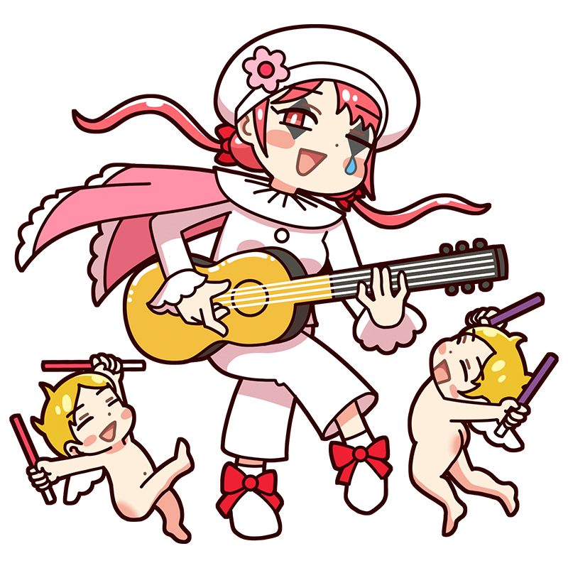

ラララ～♪
一緒に歌えば、どんな場所だって
パーティーに変わるのです！
ヴァトー
愉快なリズムを口ずさもう
優雅な宴のリードギター
ロココ美術の先駆者のひとり。ギターを片手に練り歩き、人々をパーティーの中に誘い込むムードメーカー。ちょっとナルシストなのが玉に瑕だが、どこか憎めない性格で、なんだかんだ愛されている。
様式
ロココ出身国
フランス王国
代表作
- 『シテール島の巡礼』
- 『ジェルサンの看板』
- 『ピエロ (ジル)』など
ヴァトーといえばこの一枚！
シテール島の巡礼
愛の女神ヴィーナスゆかりの地で、縁結びの島として知られるシテール島を巡礼する恋人たちを描いた作品。ロココ美術によく見られる、牧歌的な風景の中で娯楽に興じる人々を描く「雅宴画（フェート・ギャラント）」の代表作である。ヴァトーは本作が評価されたことでアカデミーへの入会を許され、同じ題材・構図でもう一枚のヴァリエーションを制作した。
制作年
1717年
技法・材質
油彩、キャンバス
寸法
129 cm x 194 cm
所蔵
ルーヴル美術館
(フランス)
作品画像出典: https://commons.wikimedia.org/wiki/File:L%27Embarquement_pour_Cyth%C3%A8re,_by_Antoine_Watteau,_from_C2RMF_retouched.jpg
ヴァトーってどんな芸術家？
アントワーヌ・ヴァトー
初期ロココ様式を代表するフランスの画家。若くして成功を収め、「フェート・ギャラント」と呼ばれる優雅な男女の宴や恋愛を題材とした絵画を描き、貴族たちの華やかな世界を作品に残した。結核によりわずか36歳でこの世を去ったが、その繊細で優雅な作風はブーシェやフラゴナールらに受け継がれた。ファッションのセンスにも優れ、「ヴァトー・ガウン」「ヴァトー・バック」など、服飾用語にも名を残している。
フルネーム
Jean-Antoine Watteau
誕生
1684年10月10日
死没
1721年7月18日(36歳没)